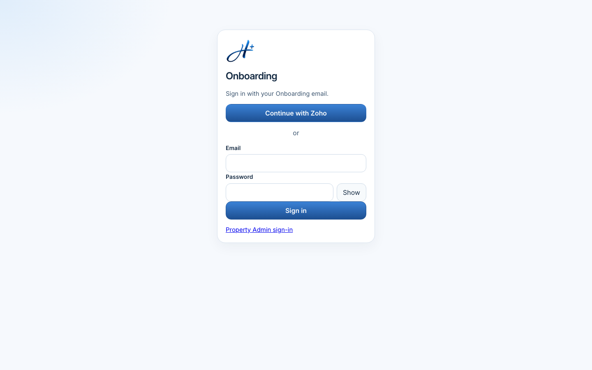
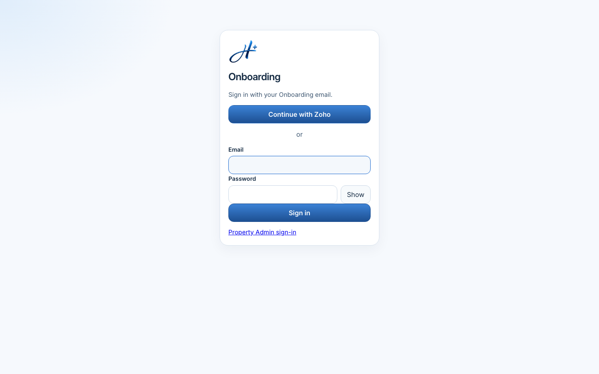
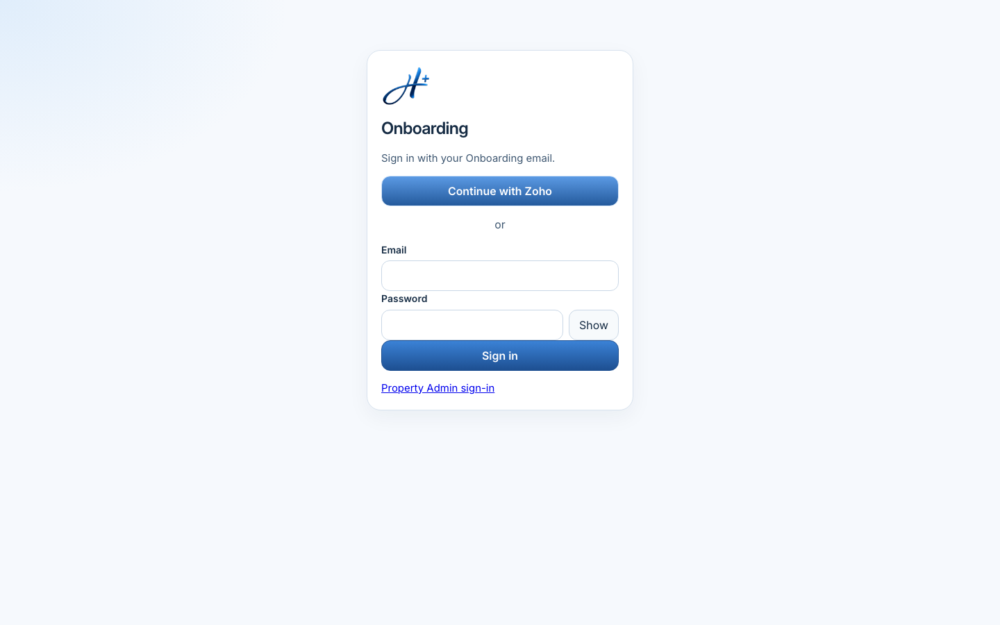
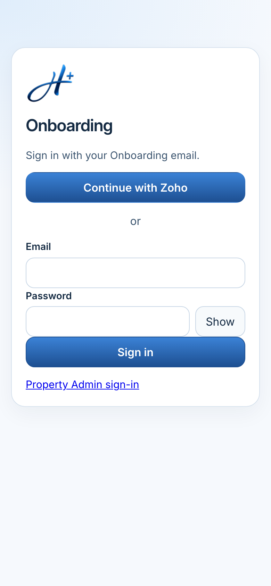
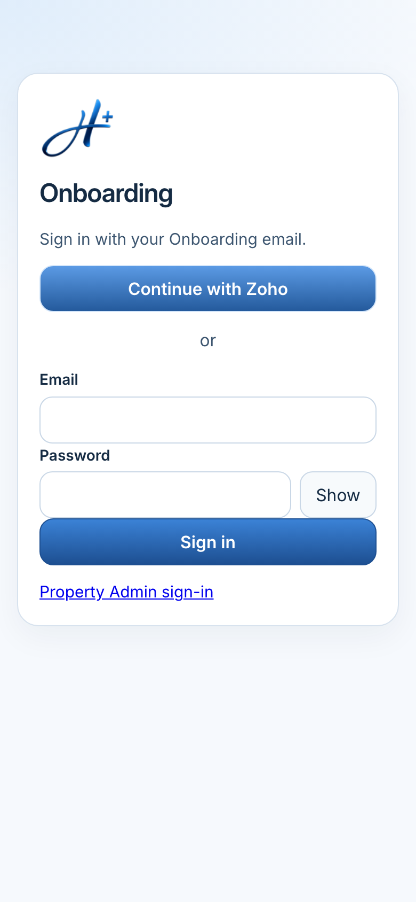

Local candidate 5c3de3d6a995d9582cf2cb07c8399d98ed8cc82d.
Headless Chrome 155 captured the local page at http://127.0.0.1:4173/.
The capture browser fulfilled Zoho status as enabled and unsigned-in, because that local process had no API.
Focus was forced with :focus-visible.
These frames are not the live site at d5386151241bd16e8f3649b350e1297e6c86b80f.
They are not a completed sign-in, Zoho link, or sign-out.




